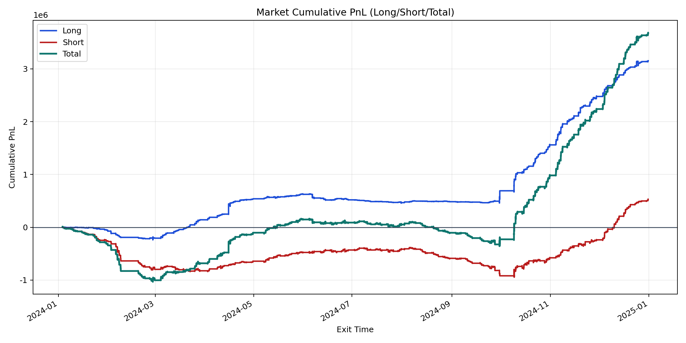
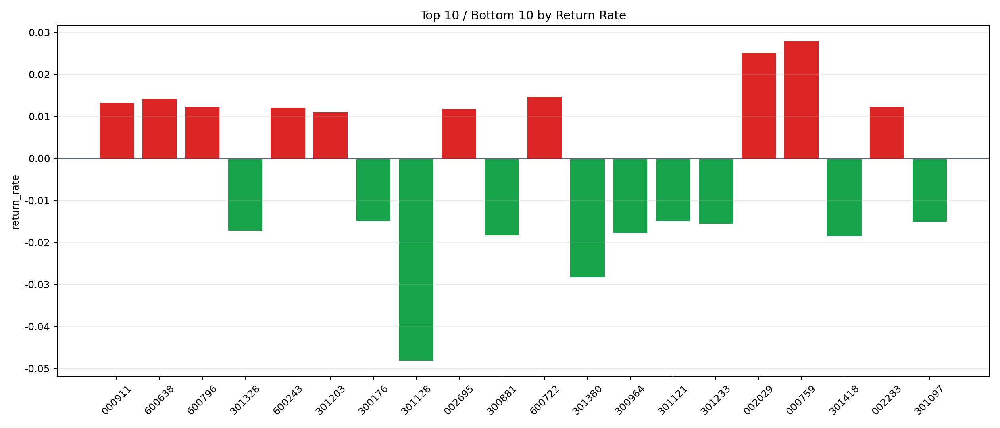

| repo_root | /home/haoranyou/data/output/alpha0.4_1w_5s_3ticks |
|---|---|
| period_months | 12 |
| period_label | 2024-01-03_to_2024-12-31 |
| start_time | 2024-01-03 09:40:06 |
| end_time | 2024-12-31 15:00:00 |
| n_trades | 835325 |
| n_symbols | 3740 |
| total_pnl | 3682065.8690500013 |
| long_total_pnl | 3153498.27845 |
| short_total_pnl | 528567.590600001 |
| total_entry_notional | 7753049902.0 |
| long_entry_notional | 2591831232.0 |
| short_entry_notional | 5161218670.0 |
| total_return_rate | 0.000474918376070321 |
| long_return_rate | 0.001216706643362958 |
| short_return_rate | 0.00010241139242410766 |
| top_symbols_by_return | ["000759", "002029", "600722", "600638", "000911", "600796", "002283", "600243", "002695", "301203"] |
| bottom_symbols_by_return | ["301128", "301380", "301418", "300881", "300964", "301328", "301233", "301097", "300176", "301121"] |

